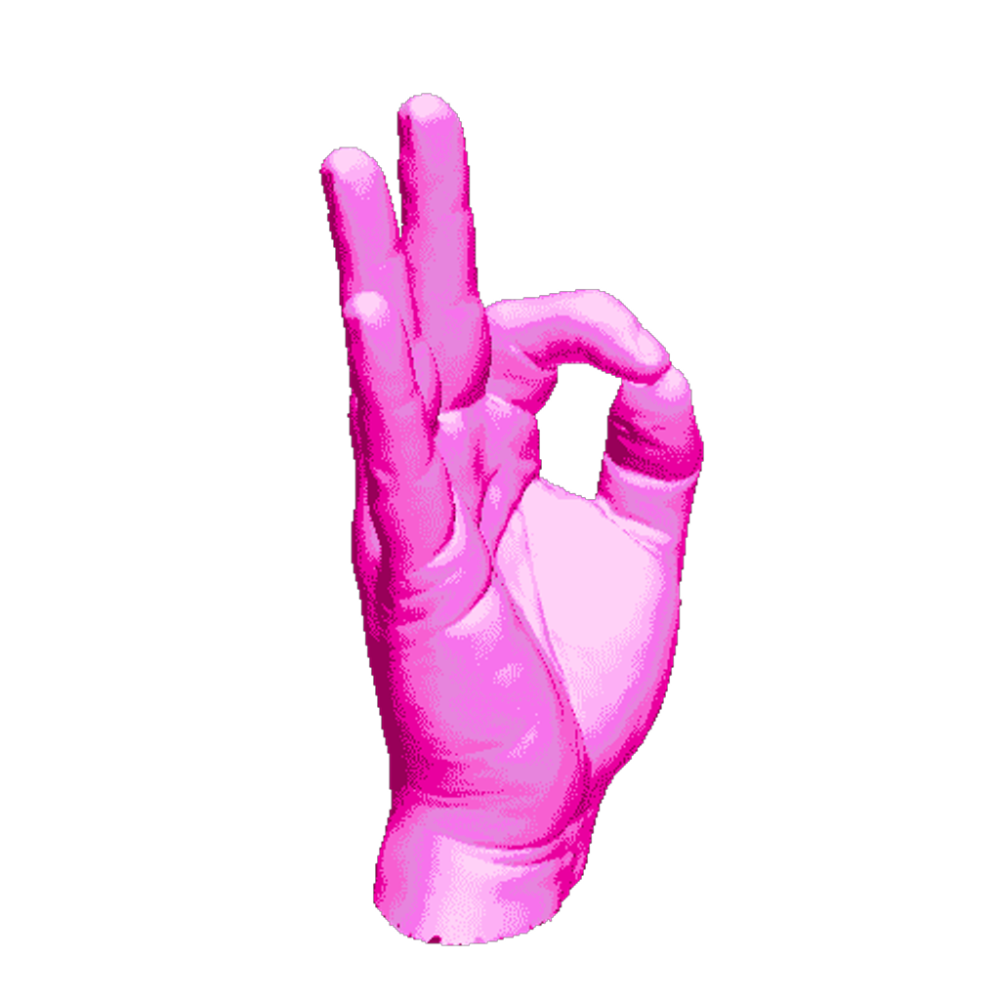

I always liked experimenting with whatever it is I created. If I created a small model structure, I would think of how it would look like if I arranged pieces in a different manner or if I removed ar added some. When editing a video, I would experiment with the length of the clip, the speed, its look, etc. When deciding on the score to place in the background of said video I would try adding music from various genres or moods. In conclusion, when creating anything, in the end what I care about is the experience (its outcome) it provides. I think that’s what makes creating art interesting. You aim to create something that will create a certain experience until all “pieces” are in place (these pieces being previous influences). I may have a certain goal in mind when creating something, but when it is whole it may have transformed into something I hadn’t imagined at first. That’s what makes creating exciting. This sentence summarizes that idea for me.

The Allosphere on campus is a perfect tool for visualizing data, and it’s exactly what this sentence calls for. The Allosphere is a closed dome where various projectors show images on the rounded walls to create a virtual environment enhanced by the use of goggles that make the projections look 3D. Essentially, the Allosphere allows the person to explore a set of data by creating a 3D environment that can be explored and seen from different angles. I wish to visit the Allosphere sometimes, though for different purposes. Much like the video I showed for the first assignment, I wish to create a submersive 3D environment where one can visualize all elements of a song, which I believe would greatly enhance the “feeling” from just seeing it in a 2D screen. That “feeling” I don't know what it is exactly, all I know is that I want to pursue it by recreating it in a different environment beyond audial.
I would agree, though I’ll explain in a manner that may not be scholarly at all. I much appreciate the use of sound to augment a certain artistic experience. However, I also take advantage of sound to help me place myself in different moods or settings. There one used to be this app called Songza (before it was bought by Google) that had a whole library of music organized in different “mood playlists.” They had a playlist for exercising, relaxing, studying, you name it. However, after a while, it felt somewhat limited. I was really obsessed with the idea of having a song to represent not only emotions but the “mood” that certain places innately had. Thus, for the last 6 years or so, I’ve spent ample time organizing my music library into these different categories. From different periods of the day, to different music eras, to different locations or situations like a “road trip,” to the “beach” or simply being at “home.” I find that doing this I have created a method in which to organize my thoughts about certain moments in my life, and in a way also to amplify the feeling they create. I realize this is really obsessive behavior and what I have mentioned is really more than what I should care to mention. Nonetheless, this sentence rings true to me. On a scholarly way, I imagine that the use of beeps where the pitch would indicate a different type of alert, or as a method of time keeping, would be very helpful for doctors during surgery and what not.